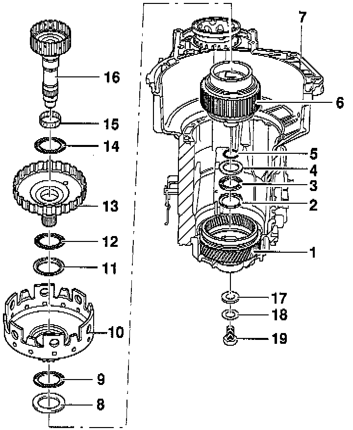
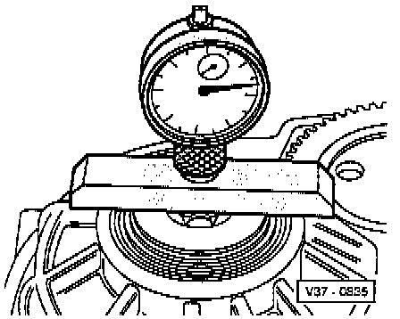
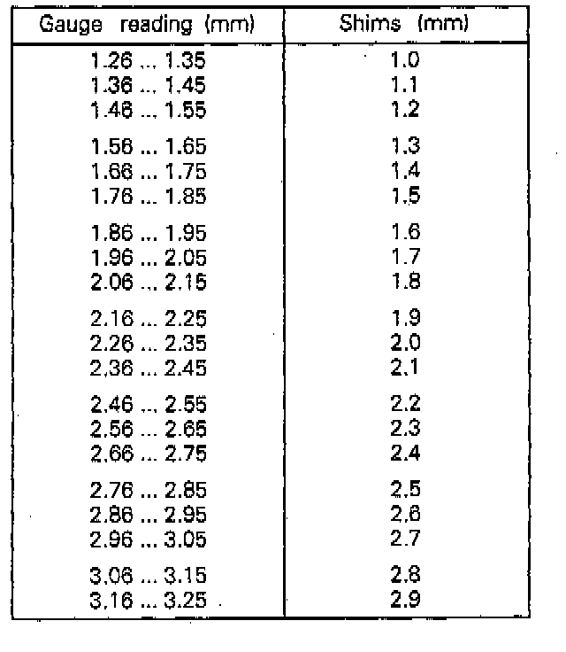
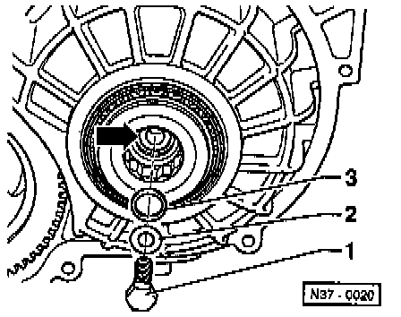

Planet Carrier

COMPONENT NOTES AND INFORMATION
NOTE: When adjusting planet carrier install components in housing without shim (item 17).
1 Input gear
- Do not remove to adjust planet carrier
- Removing and installing input gear or axial needle bearing for planet carrier, refer to Input Gear. Service and Repair
2 Axial needle bearing washer
- Install smooth side in input gear
3 Axial needle bearing
4 Axial needle bearing washer
5 O-ring
- Insert into planet carrier, refer to Planetary Gearbox Disassembly/Assembly. Service and Repair
6 Planet carrier
7 Transmission housing
- With input gear and axial needle bearing
- Axial needle bearing remains in input gear
- If axial needle bearing is damaged, refer to Input Gear. Service and Repair
8 Washer
9 Axial needle bearing
10 Large sun gear
11 Washer
- Insert into large sun gear Assembling planetary gearbox.
12 Axial needle bearing
13 Large drive shaft
14 Axial needle bearing
15 Needle bearing
16 Small drive shaft
17 Shim
- Do not install in planet carrier when adjusting
18 Washer
19 Small drive shaft bolt
- Tighten to: 30 Nm (22 ft lb)
PROCEDURES
Determining Shim -A-

- Install all components (items 2 to 16) to adjust planet carrier into gearbox housing.

- Insert screwdriver through hole of large sun gear to loosen and tighten bolt for small drive shaft.

- Install small drive shaft bolt-1-with washer-2-but without shim.
Tighten to: 30 Nm (22 ft lb).

- Set up dial gauge so that top of gauge is positioned on bolt head center with 1 mm preload.
- Zero dial gauge.
- Move small drive shaft up and take reading.
- Example: Reading 2 mm
Table Of Shims For Planet Carrier:

- Specify thickness of shim according to table.
Example:
- Measurement is 2.00 mm -
- Insert a 1.7 mm thick shim.
- Remove small drive shaft bolt.

- Insert correct shim -3- on small drive shaft (arrow).
- Tighten small drive shaft bolt -1- with washer -2-.
Tighten to: 30 Nm (22 ft lb).
- Perform planet carrier check measurement.
Planet Carrier Check Measurement
- Insert dial gauge in VW 382/7 and place tip on bolt of small drive shaft.
- Move small drive shaft up and down and take reading of play on dial gauge.
Play:
minimum = 0.23 mm
max. = 0.37 mm
NOTE: If the planet carrier has been adjusted with reverse gear brake -B1- and free wheel removed then before installing planet carrier install reverse gear brake -B1-, refer to Planetary Gearbox Disassembly/Assembly. Service and Repair